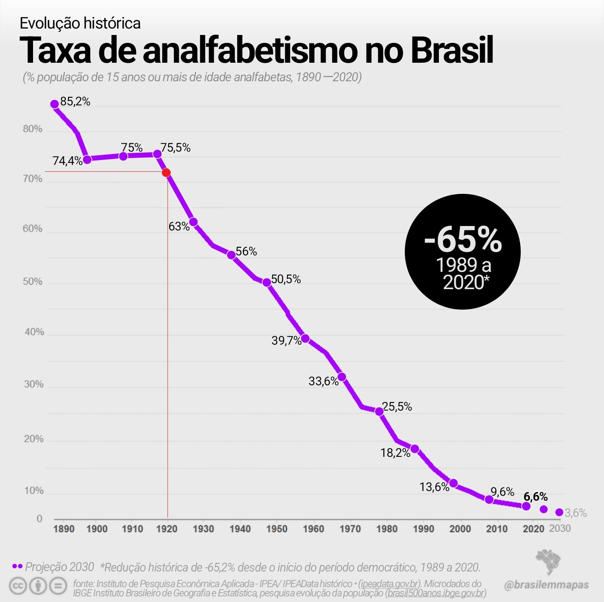
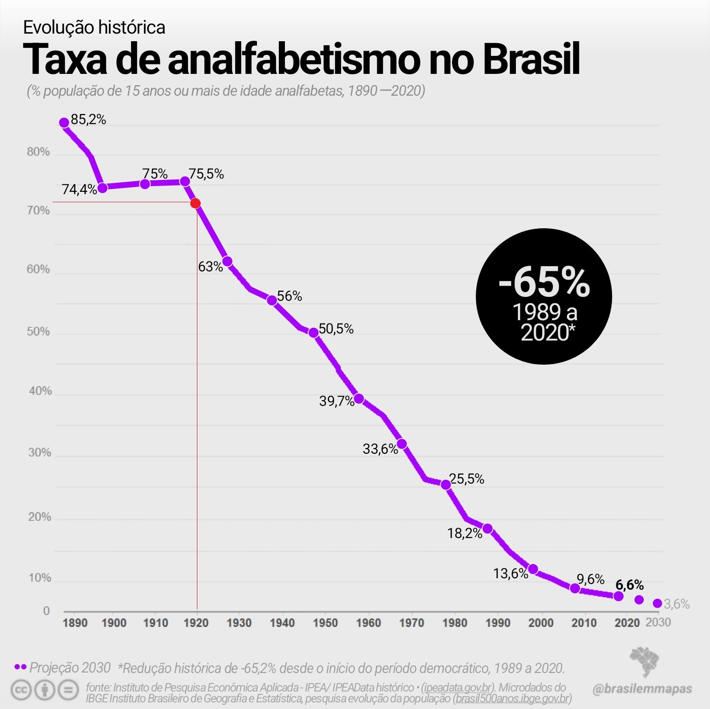

1920
Brasil tinha o índice de 72% de analfabetismo
Em 1920, a taxa de pessoas não alfabetizadas na população de cinco anos e mais era de 71,20%, o que correspondia a um total de 18.549.085 indivíduos.
0%
Em 1920, a taxa de pessoas não alfabetizadas na população de cinco anos e mais era de 71,20%, o que correspondia a um total de 18.549.085 indivíduos.
